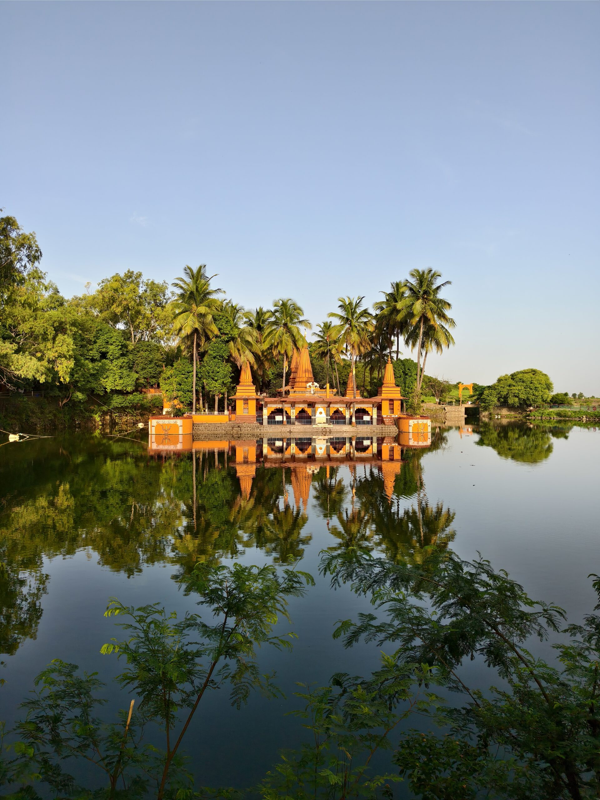
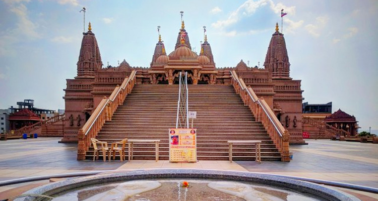
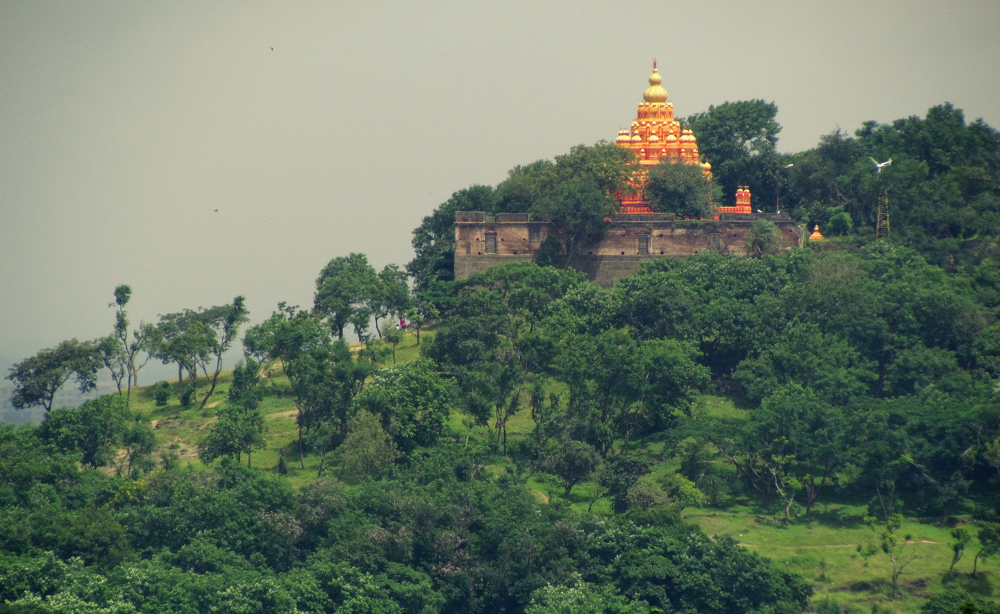
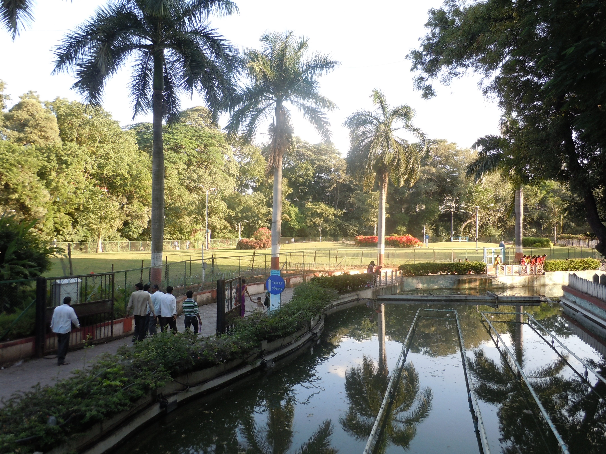
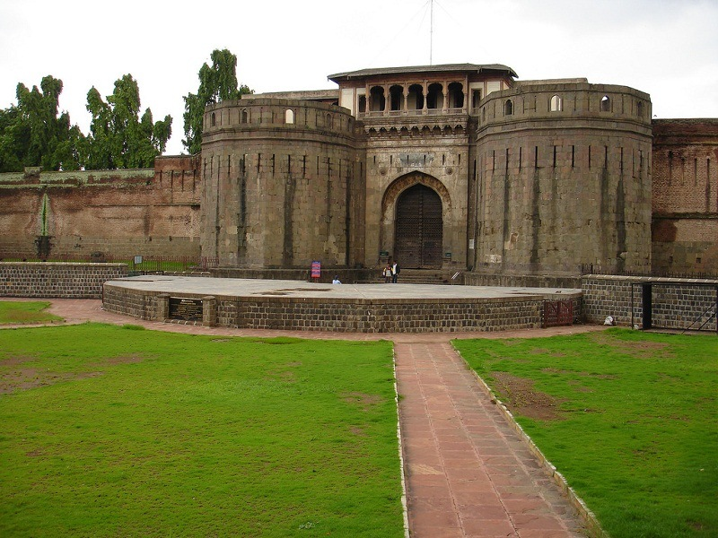

Places To Visit In Pune

Ramdara
Ramdara Temple, located near Loni Kalbhor about 25-30 km from Pune, is a serene, picturesque temple dedicated to Lord Shiva, Goddess Parvati, and Shri Ram. Surrounded by lush trees and a scenic lake, the site was rebuilt in the 1970s by Saint Shri Devipuri Maharaj (Dhundi Baba). It is popular for picnics, birdwatching, and a peaceful, scenic atmosphere.

Swaminarayan Temple
Pune's main Swaminarayan Temple, the BAPS Shri Swaminarayan Mandir in Narhe, is a stunning, traditionally carved stone structure built with ancient Indian principles, featuring intricate sculptures and offering a peaceful spiritual experience with free entry, a strict dress code (no shorts/sleeveless tops), and onsite food, open daily from morning till evening for darshan, focusing on devotion and cultural values.
ISKCON Temple
The ISKCON New Vedic Cultural Center (NVCC) in Pune, opened in 2013 in Kondhwa, is the city's largest Radha Krishna temple and a major spiritual hub. Located on Katraj-Kondhwa Road, this architectural landmark serves as a vibrant cultural center for worship, Vedic education, and, and kirtan. The temple is open daily from 4:30 AM to 12:00 PM and 4:00 PM to 9:00 PM, with no entry fee.

Parvati Hill
Parvati Hill in Pune is a historic 18th-century hilltop complex (640m above sea level) known for the Devdeveshwar Temple, panoramic city views, and 103-108 stone steps. Built by the Peshwas, it features temples for Vishnu, Shiva, and Ganesh, along with a museum and the Peshwa memorial. Open 5 a.m. to 8 p.m., it is popular for trekking, nature walks, and sunset views.

Saras Baug
Saras Baug, a 25-acre iconic, lush green park in Pune near Swargate, is famous for its 18th-century Talyatala Ganpati (Siddhi Vinayak) temple situated on a small hillock. Built in 1784 by the Peshwas, it features beautiful gardens, a, boating pond, and a, small museum. The park is open daily from 6 AM–11 AM and 4 PM–9 PM with free entry.

Shaniwar Wada
Shaniwar Wada in Pune is the historic seat of the Peshwas, built in 1732 by Peshwa Baji Rao I, showcasing grand Maratha architecture with Mughal influences, featuring grand gates (like Delhi Darwaja), elaborate fountains (Hazari Karanje), and ornate courtyards, though much of the original seven-story palace was lost in a fire, leaving impressive ruins that symbolize Pune's heritage and are known for their historical tales and occasional haunting legends.